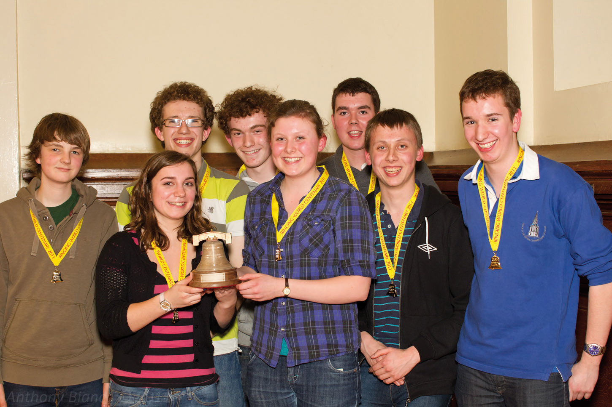

William Lay
Bell Ringing.
Campanology exploits: what change ringing actually is, and a record of what I've rung.
Bell Ringing.
Campanology exploits: what change ringing actually is, and a record of what I've rung.

Bell ringing, properly called change ringing, is a very English way of making a lot of noise with a lot of maths. A team of ringers each control one bell by pulling a rope, and instead of playing a tune they systematically vary the order the bells sound in, working through sequences known as methods, such as Plain Bob Major on eight bells. It takes real physical coordination to handle a bell well, and real concentration to keep track of where you are in the pattern while everyone else's bell is clanging away too.
A peal is a piece of non-stop ringing of at least 5,000 changes, and it must not "go false", meaning the bells can never sound in the same order twice. Every ringer has the method memorised and rings it from memory. At key moments the conductor calls a modifier, a "bob" or a "single", to switch the order around and keep the ringing true. That plan is the composition. A peal takes around three hours, and completing one is a significant achievement, physically and mentally, both for the band as a whole and for anyone ringing their first.
A quarter peal is more approachable at around 1,250 changes and about 45 minutes, but the same rules apply. You cannot stop, and the bells must never repeat an order.
The Central Council of Church Bell Ringers sets out the terminology and rules behind all of this in its Framework for Method Ringing.
In March 2011 The Ringing World marked its centenary by running the first National Youth Contest, at St Saviour's, Pimlico. A striking contest rewards ringing that sounds as close to perfect as possible. The aim is to ring the bells so they keep a consistent tempo and sound evenly spaced. Faults are noted by the judges for gaps in the ringing, or when two bells sound too close together.
Twelve teams of ringers under nineteen competed, each ringing around 160 changes and taking about five minutes to do it. Teams were given the option of ringing "call changes" or a method of their choice, and the majority chose call changes.
I rang the tenor for the Hertfordshire team, conducted by Ed Mack. We won, taking the overall trophy with what the judges deemed the best ringing of the day. The contest has been a popular fixture of the youth ringing calendar ever since.
Anthony Bianco
I learned to ring in the year I turned 11, at All Saints Church, Datchworth, Hertfordshire. Once I could handle a bell I began ringing on practice night at Datchworth and at St Peter's Church, Tewin. By 16 I was ringing for weddings in local churches, and learning increasingly challenging methods.
Peals and quarter peals are recorded in the peal book at the tower where they were rung, and logged on BellBoard, the Ringing World's database of performances. My record under my usual name is here.
My first peal was rung before I'd settled on how I wanted my name recorded, so it's logged separately under William J Lay instead.